Recent Articles
At the conclusion of the Major League Baseball All-Star Game Tuesday night, Joe Buck informed a national television audience that his Hall of Fame broadcasting partner Tim McCarver had just concluded his 15th and final All-Star Game telecast for FOX Sports.
McCarver prepared a retrospective piece about his personal All-Star game recollections, drawing from memories of his childhood, his playing days, and his years as a broadcaster... a metaphorical "before and after" of his magnificent career.
Manhattan Place Entertainment was proud to be selected by FOX Sports to shoot this retrospective. Bernie Kim produced, and the piece was shot on location with Tim McCarver in New York City two days before the game.
Below is our version of the production "before and after".
BEFORE
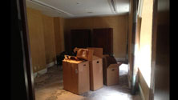
A small hotel room in NYC was transformed into a baseball environment that gave Mr. McCarver the appropriate setting and platform to reflect... and share.
AFTER
Back to Top
Manhattan Place Entertainment had the honor of being selected by the Times Square Alliance to produce a feature piece documenting "The Power of Words" -- a short film that appeared on the Times Square screens last month.
"The Power of Words" was created in tribute to Nelson Mandela and incorporated text taken from the South African leaders most inspirational writings in an artful display that was synchronized on screens across Times Square.
"It was an amazing experience witnessing this powerful art piece in the heart of Times Square,"said Steve Cohen who directed for Manhattan Place. "And it was truly an honor and a privilege to meet and interview Mr. Mandela's Grandsons".
"Midnight Moment: A Digital Gallery" is the largest coordinated effort in history by the sign operators in Times Square to display synchronized, cutting-edge creative content at the same time every day. Each month, the program presents a new selection to be screened with scheduled appearances every day at exactly 11:57pm. The piece plays for 3 minutes and magically concludes at the moment of midnight.
Alas, The Midnight Moment.
Back to Top
When World Wrestling Entertainment needs to think out of the box, they call Manhattan Place Entertainment- and this time was no different!
If you have young ones in school, you know that most every classroom these days has an electronic "smartboard" in place of the old chalk and slate some of us are more familiar with!
But the folks at WWE needed to go retro for their Extreme Rules promo spot, and they knew exactly who to call!
Among the most resourceful production companies you'll find, not only can MPE shoot , direct, produce and post produce your content, but they will find the perfect location to shoot in as well!
In this case the MPE detectives uncovered Assumption school in Fairfield CT, still rocking erasers and the like, lending itself as the perfect setting for a flashback of WWE superstar Sheamus serving detention as"youthful schoolboy". In the spot, young Sheamus is seen repeatedly writing the phrase "I will not be extreme" on the blackboard, building toward the climax of the spot (you have to watch to see what happens). The end product was exactly what the WWE folks had in mind-
The finished spot premiered during Wrestlemania on April 7th.
So remember, whether you're in the market for "Cutting Edge " or your literally looking to go "Old School" -
Manhattan Place will "go to the extreme" for you as well.
Back to Top
6/14/13
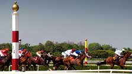
For the second year in a row, Manhattan Place Entertainment (MPE) had the good fortune of collaborating with The New York Racing Association on commercial spots for the Belmont Stakes. The :30 second and :15 second spots entitled "The Test of the Champion", specifically focused on the 3rd jewel of thoroughbred racing's Triple Crown.
New York's Belmont Park is the sight of this annual event and the commercials showcase the history, beauty and grandeur of the hallowed venue along with the excitement and thundering action that is witnessed during one of sports greatest spectacles.
Donald Nelson from the NYRA said, "Just like the first time we worked with them, Manhattan Place did an outstanding job. They not only beat deadlines but provided great creative direction and an exceptional end product that captured the excitement and enthusiasm of our signature event."
"What people might not know is that we were also prepared to cut an entirely different spot based on the outcome of the Preakness Stakes", said MPE's President and Executive Producer Steve Cohen.
"If there was a horse making a bid for the Triple Crown at Belmont, we would've created a spot specifically with that storyline in mind. But when Oxbow won the Preakness Stakes, and it was determined there would be no Triple Crown winner this year, we stayed in the direction of "The Test of The Champion" spots."
"But then again, that's why we love working in sports production, it's unpredictable, which keeps things interesting".
The spots aired on NBC Sports.
Back to Top
3/15/13
It is so liberating to be out from under the chills of winter and to shed the heavy coats and wraps and welcome the birth of spring!
At Manhattan Place Entertainment we are poised to help you with any of your production needs, be they web based or focused more towards traditional television. Let us help you conceive, shoot, produce, post produce and even distribute your video concepts. All at our expected level of expertise and price efficiency.
In the spirit of spring, let's plant some seeds, fertilize and grow them together!
Back to Top
3/07/13
Last week an old friend stopped by the Manhattan Place Entertainment studio to do a green screen shoot for Fox-
Gus Johnson!
As you may know, Gus was recently assigned to the prestigious role of play by play man for Fox.
Gus will be behind the mics for games in the Barclays Premier League, the FA Cup and UEFA Champions League matches, including the FA Cup and UEFA Champions League Finals, May 11 and 25, respectively, on FOX.
It was a bit of a homecoming for Johnson since MPE Co-chairman Mike McCarthy helped him get his start at MSG Network as the radio voice of the Knicks, and Founder Steve Cohen had worked with Gus many times over the years as Johnson's career developed at MSG and CBS.
"Manhattan Place is a first rate operation", Johnson said. It doesn't surprise that they get the work that they do-they're top notch."
"When we hired Gus at MSG, we knew we were, at a minimum, getting a high energy package-what we couldn't know at the start was how he would go over -and how many folks would want to see and hear more of him-I couldn't be happier for him", McCarthy said.
"The job of play by play for what is clearly the highest level of soccer is a demanding role with many levels of scrutiny, on an international level", McCarthy said-"You have to have talent, work ethic, and perhaps most importantly a thick skin-and Gus has all of those."
Manhattan Place Entertainment serves all your video needs, from field production to post production and everything in between, whether you're a commercial producer or a play by play man on your way to Barcelona, give us a call!
Back to Top
2/21/13
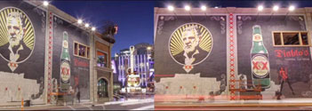
MPE has added industry veteran Joe Favorito as a Public Relations consultant to better serve our clients from a communications standpoint, and to better tell our story to the media and to all those who will be interested in hearing all we have done, and all we plan to do.
Joe has spent his career helping manage the communications, business development and brand strategy for some of the biggest companies in sports and entertainment, from the NBA's Knicks and 76ers to the USTA and Bloomberg Sports. He has had a hand in promoting everything from Broadway plays and hit movies to startups in Mixed Martial Arts and the Olympics, and now he is helping mold Manhattan Place's strategy as a consultant in many areas. Ranging from content to communications and social media. "I have known and respected the work that Steve (Cohen, founder) and Mike (McCarthy, co- Chairman) have done for years and it is a pleasure to help tell their story and grow their vision," said Favorito, who now runs his own independent consulting business and is also an author and professor at Columbia University. "The work they have done in their respective areas over decades is always visionary and best in class, and it is exciting to be able to assist them in what they have coming next."
"We are really excited to have an industry leader and an 'insider's insider' like Joe on our team," Mike McCarthy added. "He has always been one of the most respected communications professionals in the business, and can help us and our clients maximize all the strong work we are doing. It's another asset that we can offer up to our clients as our business continues to grow."
Back to Top
2/14/13
After an exciting year at Manhattan Place Entertainment, we thought we'd stop for a second, catch our breath (in New York we can actually see our breath) and reflect on the work we've done and the clients, new and old, we've provided services for.
Of course, being in the moving video business, the best way for us to reflect on our work is to watch it - all of it - select the best examples of that work and put them together using the finest production tools available in a form that people, anywhere and anytime, can watch.
The result? A highlight or "sizzle" reel. Our chosen path of distribution? The World Wide Web.
Manhattan Place Entertainment announces, as part of an exclusive partnership with the World Wide Web, that it will distribute to an exclusive group of long term, new and future clients that very same sizzle reel as a virtual "attachment" to this email.
This reel will exhibit the very same work that MPE has done for clients like Ford, Samsung, Kohl's, Intel, Tiffany, Keurig, and ebay, and it showcases our wide array of skills in the moving video world across all platforms, from traditional commercials to rebranding programs to branded web content to episodic product placement to the production of live events.
But don't take our word for it - simply slide your mouse over this blue wording below and strike the button twice, using a quick thrust of your index finger and begin watching- it's that simple!
Simpler still is contacting us to help provide a production solution that fits your needs, however large or small --- let us give you the quality of production services we are known for and is shown on our "sizzle" reel, and you can prepare to be seen on next years version!
Because we at MPE feel that the World Wide Web is here to stay. http://www.manhattanplace.tv/samplereel/sizzle-2013/video.html
Back to Top
1/7/13
With the exception of the 3.5 million dollar Super Bowl commercials these days, most of the time, we miss them ---- commercials, that is ---- we DVR, TiVo or Netflix our way right past them. The solution for a brand to get its message across? Product placement!
In a way, we've come full circle - in the old days Art Linkletter, Gary Moore and even Johnny Carson would hold up a product right within the body of the show and begin pitching-Product placement in its most basic form.
In this, the "DVR" era, Product placement has become infinitely crucial to branding efforts - "Modern Family" does it, "Skyfall" does it, almost all forms of reality programming do it - and more and more of them, including some on that list, call on Manhattan Place Entertainment to execute the vision.
One such recent example was with Ford and its superior utility vehicle, the "Escape".
Ford reached out to Glam.com to consider exposure within its popular webisodes with Lauren Messiah, an L.A. based stylist and fashion blogger.
Seamless integration of the "Escape" was employed with MPE's unique field production and post production skills to create a viewing experience that was informative to watch and equally effective for Ford's messaging - a double win for the viewer and the client, always MPE's ultimate goal.
Working with Manhattan Place is always a joy, said Robert McConnell, the Director of Ad Solutions for Glam.com. The team is dedicated to turning out an excellent end product, making the planning and shooting process easy and seamless, and lastly providing excellent value."
Worried about folks skipping your commercial? Ford had the same concerns until they used Product placement with Manhattan Place Entertainment-Let us do the same for you!
Back to Top
1/31/13
When you hear the brand "E Bay", do you think fashion? Well you may be doing that now, since the popular site has been working with major retailers to market high end apparel.
Manhattan Place Entertainment, through its long standing partnership with Glam.com, produced a series of vignettes showcasing Fall and Winter fashion for women earlier this season.
The link below shows one of the segments that confirms, again, MPE will over deliver for its partners!
Glam eBay
Back to Top
1/24/13

This week MPE did a pro bono shoot for Prostate Cancer Awareness at the School of Visual Arts -- the event featured an appearance by a fairly well known relief pitcher -- Mariano Rivera.
Rivera, in most eyes the greatest stopper in the history of the game, made the news with his statements regarding last years post season --"It was torture", Rivera said. "At one time I was home and I said I have to go there and throw, I was calling the office and they said, "Well you cannot do that, you're not ready."
Rivera was introduced while his entrance song "Enter Sandman" played in the background as it has for the fifteen years he has pitched for the Yankees at Yankee Stadium. He was inevitably asked about his health (he was out last year with a torn ACL he incurred while shagging flies) and said "I have my pitching coach here so I can't lie", Rivera said. I feel great, I feel real good."
Rivera was joined by the aforementioned pitching coach Larry Rothschild, former catcher John Flaherty and former Yankee great David Cone.
The event was held to raise funds and awareness for Prostate Cancer.
For more information on that important effort, see it here
Back to Top
1/17/13
Recently, Manhattan Place Entertainment was honored to have been chosen as the field production solution for a charity called "Donors Choose", a group that does wonderful things for folks in need on a nationwide basis and more importantly right here in our neighborhood- the South Bronx.
At MS 223, teacher Bill Ohl spearheads the effort to solve a simple yet critical need for his students-the need for books.
"The South Bronx is Ground Zero for childhood poverty", Ohl said. "There are 500,000 residents in the South Bronx, and not a single bookstore to be found -"Donors Choose" allows us to put good books into the hands of kids on a regular basis.
MPE provided the field production as part of a collaboration with the lead production team from "Anatomy" - the video is shown here
The video was shown at a fund raising event earlier this month called the "100 Women in Hedge Funds' Gala" and helped raise over 1.4 million dollars for "Donors Choose".
It is our hope that MPE's friends and clients review the link below and consider a donation to "Donor's Choose" - it is a remarkable effort endorsed by folks such as Oprah Winfrey and Stephen Colbert, who says on the website "You know exactly who you're helping".
The website presents real teachers, like Bill Ohl, expressing real needs for real students.
www.donorschoose.org
Manhattan Place Entertainment Founder Steve Cohen said " Like any business we enter into a project to cover our cost and hopefully make a profit-make money. On this project, we simply went in it to make a difference. If we were successful at that, we couldn't be prouder as a company".
Back to Top
1/10/13
And now that those boring negotiations are over, MPE is hitting the ice by shooting promotional material for the New York Rangers this weekend and will be rolling out more hockey products in the coming weeks to help celebrate the dropping of the puck!
Steve Cohen will be celebrating his 19th year of collaborating with the Rangers on their media needs, going back to helping produce the Stanley Cup video "Oh Baby" in 1994, which was assigned to him by his current partner at MPE, Mike McCarthy!
McCarthy, who recently left a CEO job with the St Louis Blues to reestablish NY TV roots, feels Manhattan Place Entertainment is uniquely poised to bring NHL related content to bear.
"We've got some strong relationships and no shortage of concepts for folks in the hockey world to reconnect with their fan bases, from long form programming to promotional spots, and everything in between -- stay tuned!"
The MPE cams were also busy last week helping long time partner WWE launch a new character with an interesting shoot in the Edison Ballroom (hint hint) and will be hitting the West Coast to produce spots for Glam and Nature Maid next week.
As they say in the NHL and at MPE-- Keep your Head Up and your Feet Moving!".
Back to Top
December 12, 2012

Former CEO of the NHL's St. Louis Blues and Long Time Head of Madison Square Garden Networks To Fill New Role With One Of The Broadcast Industry's Leading Production Entities
Manhattan Place Entertainment, one of the nation's leading production and creative services companies, today announced that they have named Mike McCarthy to the newly created position of Co-Chairman. McCarthy, one of the most respected and innovative executives in the entertainment business, joins Manhattan Place after a storied career in business management and broadcast production, most recently as Chief Executive Officer of the St. Louis Blues of the National Hockey League after a trailblazing run with Madison Square Garden Networks. McCarthy will help oversee new business development and brand project growth for Manhattan Place, whose 25 year track record in advertising campaigns, episodic series, branded content, commercials, and on-air promotions for broadcast, the web, or digital platforms, is among the best in the industry.
"Mike McCarthy brings the exact skill set that will change the game for MPE and all of our partners. His vision and leadership will enable us to broaden the overall scope of what we do and take it to an entirely new level," said Manhattan Place Founder/President Steve Cohen. "We are beyond excited by the prospects of being able to take a concept, make it, and distribute it. If we were a sports franchise, I'd feel like we just signed the most coveted free agent on the market by adding Mike to the organization. We got our lead-off man, cleanup hitter, number 1 starting pitcher and lights out closer all rolled into one! We're on an emotional high right now because we feel like the skies the limit in terms of where we can go from here."
"I have seen the exemplary work that Steve and the team have done over the years, and I am looking forward to working with them to further expand their reach for both new and existing clients," McCarthy said. "The entertainment business these days is being driven by creative minds that know how to tell brand stories in every visual means possible, and no one has done that better than Manhattan Place. It will be exciting to help not just grow the business but the footprint of the industry together as well. The current content landscape is blurred between agencies, production
companies and distribution outlets-this talented group at MPE is poised to take advantage of this unique opportunity and I'm proud to be a part of it."
A Connecticut resident, McCarthy most recently served as the CEO and Alternate Governor of the St. Louis Blues, where he oversaw day-to-day operations for the NHL franchise, guiding the team to its first Central Division title in over 10 years, and driving revenue growth to unprecedented heights for the club. He was also directly responsible for operating the Scottrade Center, the 7th most active arena in the United States, and the re-opened and renovated Peabody Opera House. As a founding partner of SCP Worldwide, he was chairman of the highly acclaimed sports, entertainment and media production company, Tupelo Honey Productions, driving significant revenue growth and client base for the firm.
Prior to joining SCP Worldwide, McCarthy served as President of Madison Square Garden Networks Group, a position he rose to during his 23-year career with the organization. During his tenure, he oversaw production, programming, ad sales, marketing, new media, technical operations and affiliate sales efforts that led to an extraordinary 50 Emmy Awards and 250 Emmy Award Nominations as well as a host of other accolades that included the national Cable ACE Award, an International Festival Award, two Pro Max Marketing Awards, a Bandies Award and The Mark Award. Besides being recognized for excellence in traditional television production and programming, McCarthy initiated a series of innovations that helped make MSG one of the most technically advanced regional networks. Those innovations included the introduction of High Definition Television (HDTV) in 1998 when MSG aired the first regularly scheduled sports events covered in HD.
As the leader of Madison Square Garden Networks Group, Mr. McCarthy had the responsibility of overseeing the entire operation of MSG Network, Fox Sports Net New York, MSG Radio, MSG ITV and MSGNetwork.com. He managed budgets of almost $400 million in revenue and over $200 million in expenses, while overseeing over 200 staff and another 300 freelance employees.
Manhattan Place Entertainment has produced award winning content for every broadcast network, major cable outlets, worldwide advertising agencies, Public relations and marketing firms, as well as a who's who of corporate clients including: ABC Television, ABC Sports, Disney/ABC Digital, ESPN, Euro RSCG, HAVAS Worldwide, Glam Media, FX Networks, Speed TV, Kraft, TV Food Network, Madison Square Garden Advertising, The New York Knicks, The New York Rangers, Nickelodeon, Paramount Pictures, VH-1 Movies, Original Media, Noise Digital, Trailer Park, Versus, Turner Sports, NBC Sports, General Electric, CBS Sports, Comedy Central (The Daily Show), Ford Motor Company, Intel, WWE, FOX Sports, HBO Sports, Directv, Burson Marstellar, Red Bull, and Brandarc.
About Manhattan Place:
Since its inception in 1987 Manhattan Place Entertainment has maintained a reputation as one of the most respected television production companies in the entertainment industry. From concept through to final deliverables, they are a direct source for every type of service in the realm of film, video and digital production.
From Super Bowls to PSA's with former Presidents of the United States, Manhattan Place Entertainment has produced content that has been viewed by audiences literally in the tens of millions, across all platforms, all over the world. Along the way they have garnered dozens of the industry's top honors including multiple Emmy Awards, Promax Awards, Telly Awards, and Cine Eagles, while helping their partners win dozens and dozens more. Originally renowned as a boutique shop for field production and on-location shooting, MPE has transformed and grown to develop, produce, and expertly deliver a wide range of content in long, short and medium format. From live sporting and entertainment events, to advertising campaigns, commercials, and episodic television, MPE is a direct source for facilitating and executing any type of production at the highest level.
Back to Top
December 14, 2012
As most everyone knows by now, The Rolling Stones are playing a handful of concert dates to celebrate 50 years of the band being together. What you may not realize is that the Stones would not have been able to recover their costs for this mini-tour unless they got "fiscally" creative.
"Usually, when you do 100 shows or 130 shows, you kind of start to break even around 30." said Mick Jagger. "If you only do 7 shows you're never going to break even."
So, the idea of a doing a live pay per view concert was put into motion! And with that in mind, a strong pay-per-view partner was needed. Enter WWE. WWE, the world's pre-eminent provider of pay-per-view programming, in partnership with the Dainty Group and Endemol (the tour's promoters), will be distributing and marketing the pay-per-view event entitled "One More Shot".
Manhattan Place Entertainment had the great fortune of being asked by WWE to shoot a variety of material with members of the band to help promote the upcoming live pay per view.
"I'm not going to lie, this was one of those times where I would have paid to be on this shoot." said Steve Cohen who was the director of photography for Manhattan Place Entertainment. "It was a once in a lifetime experience, and one I will never forget". (Too bad Keith was home sick!)
The live pay per view event entitled "One More Shot" is this Saturday, December 15th at 9pm.
Back to Top
November 16 2012
We never imagined that the WWE would ask us to be their dance partner... but we were wrong!
Since it takes (2) to Tango, the WWE once again "turned" (yes, another dance pun) to Manhattan Place Entertainment (MPE) to shoot another in its series of character vignettes.
The latest spot features Fandango, a new Superstar who is a "smooth" operator both in the ring and on the ballroom dance floor!
To get this project accomplished, MPE had to perform some quick "steps" of our own to meet the challenges involved, one of which was finding an available location that visually conveyed the look and feel of a network "Ballroom Dance Show" in less than 24 hours.
We came up with several options and the choice was made to shoot at Manhattan's elegant Highline Ballroom.
With Steve Cohen as Director of Photography, MPE handled all of the production management providing such production services as camera department, lighting, grip, sound, make-up, wardrobe, casting, locations, and all of the manpower for the project. It all resulted in a piece that visually had a cinematic quality along with all of the glitz, glamour, and characteristic style of a TV dancing show.
With our quick and efficient work against a tight deadline, we once again proved that as a production company we can deliver at a high level, regardless of circumstance. You might say this was a case where we were happy to "do the hustle" for our client.
The spot aired November 12th as part of the USA Network's Monday Night Raw series.
Back to Top
October 15 2012
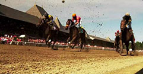
Manhattan Place Entertainment saddles up once again with the New York Racing Association as part of an ongoing campaign to promote thoroughbred racing in the state of New York.
The NYRA turned to MPE to produce a spot that highlights the importance of horse racing and breeding to the state's overall economy.
The campaign illustrates how New York's more than 300 breeding farms, employing about 35,000 workers, make up a vital part of the state's economy.
The spot combines exciting racing highlights from Aqueduct, Belmont and Saratoga, along with poignant imagery from New York's breeding farms.
This spot crosses the finish line by emphasizing the central theme of the campaign, utilizing the branded slogan created by MPE for NYRA "The Racing Heart of New York."
The campaign premiered during NBC'sports coverage of the 2012 Belmont Stakes and will continue to run throughout the year.
Back to Top
September 28 2012
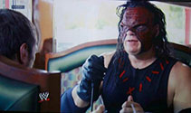
Manhattan Place Entertainment has continued to tag team with World Wrestling Federation, which has turned to MPE to shoot a series of vignettes.
The segments are airing as part of WWE's '"Monday Night Raw" television show on the USA Network.
And in the latest installment, the partnership "rages" on, as we catch up with two WWE Superstars who are ordered to undergo anger management counseling.
With Steve Cohen as the Director of Photography, MPE's cameras shot three different vignettes featuring Daniel Bryan and Kane.
A pseudo-psychologist named Dr. Shelby tries to help them work through their anger issues, as the two Superstars examine the roots of their rage.
Can these two share the ring without driving each other crazy?
WWE fans will soon learn the answers, as the vignettes helped set the stage for another big night for the WWE Universe.
The videos can also be seen on the WWE's web site, and hopefully you'll have as much fun watching them as we did shooting them.
Back to Top
September 20 2012
Manhattan Place Entertainment is taking a trip uptown to a mysterious new 'haunt' on the Upper East Side.
It's "666 Park Avenue", a new show on ABC this fall, about an apartment building called 'The Drake" that might be possessed by supernatural forces.
MPE was called upon to shoot behind the scenes footage and content about the show, which premieres Sunday, September 30th.
Taking our cameras on location to the scene of the series, we shot an interview with one of the stars, acclaimed singer and actress Vanessa Williams.
She discusses her role on the show as Olivia Doran, the wife of the owner and landlord of the building.
We also interviewed the show's costume designer for some insight into the cast's wardrobe, and shot footage of the show while it was in production, including the cast shooting their scenes, the costume area, and the crew at work.
The footage will be used to promote the new series and give viewers an inside look at the people behind it.
So look for MPE's work on the show's web site, and be sure and drop in at New York's most thrilling and chilling address: '666 Park Avenue', Sunday nights at 10 on ABC.
Back to Top
September 7 2012
Manhattan Place Entertainment steps into the ring with World Wrestling Entertainment, collaborating on a special feature for WWE's "Monday Night Raw".
Recently we headed to WWE headquarters in Stamford Connecticut, to shoot a humorous vignette promoting a match between two WWE superstars: David Otunga and World Heavyweight Champion Sheamus.
The premise of the skit is a mock deposition, in which Otunga plays an attorney trying to ban Sheamus's most devastating weapon: the Brogue Kick, after he kicked Otunga's "client", fellow wrestler Ricardo Rodriguez.
Seamus is forced to defend himself and he immediately sets the tone.
When asked if he "solemnly swears", he starts swearing at his opponent, only to be told it's not that kind of swearing.
Things continue to get more heated, until Sheamus brings the deposition to a crashing halt, by delivering one of his brogue kicks right into the camera.
Luckily we still have a few cameras left.
It all makes for an entertaining video, which aired September 10th as part of the buildup to the match between two of the WWE's top wrestlers.
You can still catch it online on the WWE's web site, and we're sure you'll get a "kick" out of it.
Back to Top
September 7 2012
With the 2012 U.S. Open in full "swing", Manhattan Place Entertainment (MPE) is teaming up with the Tennis Channel on its coverage of the prestigious Grand Slam tournament.
MPE has been called upon to collaborate on a U.S. Open show called "Tennis Channel Academy" hosted by a tennis Hall of Famer Tracy Austin.
MPE's cameras captured in-depth interviews with some of the biggest stars in tennis, including three-time U.S. Open champion Serena Williams, five-time champ Roger Federer, Olympic gold medalist Andy Murray and career Grand Slam winner Maria Sharapova.
We also shot a feature on one of the most accomplished and inspirational players in tennis history, the late Arthur Ashe.
Along with the player profiles, Manhattan Place is providing the visuals to establish much of the show's look, shooting branding scenics from around New York City, behind the scenes footage of the broadcast, on court action and the championship trophy itself.
Tune in to The Tennis Channel throughout the rest of the USOpen tournament and you'll see some of MPE's best stuff "served" up.
Back to Top
August 1 2012
New trends are on display in Manhattan Place Entertainment's latest collaboration with Glam.com.
MPE shot a video on the Motions line of hair products, featuring women getting natural hair makeovers.
Performing the makeovers was celebrity hairstylist and beauty expert Ursula Stephen, the hairstylist of choice for such stars as Rihanna, Keyshia Cole, and Michelle Williams.
Ursula helped show the bloggers how Motions hair products can help African-American women wear natural hairstyles in various types, including curly, wavy, curly kinky, and kinky coiled.
Three lucky contest winners received new hairstyles, as well as an all-expenses paid trip to New York City!
They also had the chance to showcase their new look in a special Motions spread in Essence Magazine.
It was all part of a new campaign to introduce the company's new line of natural hair care products, 'Motions Naturally You'!
Check out their style, and ours, at Glam.com.
Back to Top
August 14 2012
One of television's most respected journalists, CNN anchor Anderson Cooper, will launch Season 2 of his daytime talk show this fall, "Anderson Live". Working in collaboration with Definition 6 and Joe Chapura's Danieli Entertainment, Steve Cohen was the Director for four spots focusing on the extensive preparation underway for this year's revamped edition of "Anderson Live".
The show will be moving to a new set at Manhattan's CBS Broadcast Center, and will have a live studio audience along with a rotating set of guest co-hosts. The spots were shot in the various locations that were a "work" in progress, including the studio that the show will go live from, the administrative offices, and the set construction department.
Shooting Anderson in these environments helped to convey the anticipation, excitement and energy surrounding the new show as it comes together. "This was a wonderful experience for me. Working with Joe Chapura and Rich Krekian and the folks from Definition 6 on this project was a total pleasure," said Steve. "And Anderson is a real pro. As a director, I appreciate his instincts for knowing how to deliver on a project like this. He made me look good in the process."
Look for the promos for the show over the coming weeks, and speaking of promos, we also want to "direct" your attention to the new season of "Anderson Live," premiering Monday, September 10th at 12 noon on Fox 5 in New York.
Back to Top
August 7 2012

The New York Racing Association (NYRA) was not "horsing" around when they retained Manhattan Place Entertainment (MPE) to produce their latest series of branded video content. The campaign included multiple commercial spots and a long form video for the web.
The objective was to show the excitement, grandeur and history of thoroughbred racing in the state of New York, while enticing fans to visit the state's three most fabled venues for "The Sport of Kings": Aqueduct, Belmont and Saratoga race tracks.
The campaign also highlights the importance of the thoroughbred racing industry to the overall economy of New York State.
"Our company needed two signature commercial spots and MPE delivered beyond all expectations." said Dan Silver NYRA's Director of Communications & Media Relations. "The final product was of the highest quality. Their professionalism and talent was evident in every step of the creative process."
MPE created the new brand slogan, "The Racing Heart of New York"for the campaign and animated the NYRA logo to simulate a pumping heart beat.
Mr. Silver added, "It was a pleasure to work with MPE. We would highly recommend them to anyone in search of a supremely talented and easy to deal with production team."
The campaign premiered during NBC Sports' coverage of the 2012 Belmont Stakes.
MPE is proud to have helped NYRA bring this winner across the finish line.
Back to Top
July 26 2012
By now, you've probably seen or heard the "DO EVERYTHING. DO ANYTHING. DO AC." campaign, inviting visitors to come to Atlantic City.
What you may not have known is that Manhattan Place Entertainment (MPE) has been "Do-ing" its part on the video production side of the campaign.
Euro RSCG Worldwide, the ad agency behind "DO EVERYTHING. DO ANYTHING. DO AC", along with the Atlantic City Alliance were faced with the task of capturing spectacular images of the special events that took place on the Atlantic City beach and boardwalk this past 4th of July. With an extremely high "visual" standard in mind, they once again turned to MPE.
"Working with Steve Cohen and the crew at Manhattan Place Entertainment was a fantastic experience!" said Euro RSCG producer Lisa Christman. "The footage looks amazing and both the agency and AC clients are thrilled with the final video."
"It was a pretty cool gig" said Steve Cohen of Manhattan Place Entertainment. "The main challenge was coming up with a plan that enabled us to be in multiple locations "simultaneously" so that we wouldn't miss anything that was going on that day. Having 6 camera crews helped!. I think we got some very pretty looking images and I'm really proud of the way the video turned out".
The day's events featured a free concert with recording star Kevin Rudolf, who performed his hit "Let It Rock", which is the theme song of the "DO EVERYTHING. DO ANYTHING. DO AC." campaign.
The skies above the city also lit up with a fantastic fireworks display by the famed Grucci brothers, billed as the largest display in New Jersey.
After the sights and sounds of the music and fireworks, the night was topped off by the premiere of the dazzling "Duality" 3D light show.
Visitors to Atlantic City can now experience the light show every night year round at the city's historic Boardwalk Hall. It leaves crowds in amazement, as the facade of the Hall seems to shatter and fall, only to magically reappear minutes later.
Back to Top
July 12 2012
Jamie Cohen, Manhattan Place Entertainment's resident still photographer, added this very "tasteful" image to her portfolio on a recent tabletop shoot for Tofutti Brands.
Best-known for dairy-free ice cream, Tofutti has created their first dairy-free ricotta product available directly to consumers, called "Dairy Free Ravioli".
Tofutti turned to Jamie to get this project covered and they meant it... literally!
So from now on, whenever you are in the frozen foods section by the Tofutti, you'll see Jamie Cohen's photography on every cover of Tofutti's Dairy Free Ravioli packages.
As you can guess, this was one shoot where the photographer DID NOT have to instruct the subject to "say cheese" when she snapped the photo.
Back to Top
June 28 2012
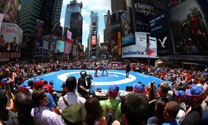
An international sporting event - at the Crossroads of the World, Times Square. And Manhattan Place Entertainment is there to bring it all to viewers, on the scene and on TV.
Global Media turned to MPE to bring its production expertise to 'The Grapple in the Apple", an Olympic qualifying wrestling match between the USA and Russia.
The match was hosted by Beat The Streets, a non-profit organization that promotes the sport of amateur wrestling.
It was the latest example of MPE using its complete production capabilities to successfully execute a project. With Steve Cohen as Director, we set up an elaborate four-camera shoot, and handled all aspects of the live production on the technical end.
The match was shown live on the Times Square Jumbotron in front of an estimated crowd of 20,000, and televised two weeks later on the NBC Sports Network.
In the end, the United States thrilled the crowd with a 4-3 victory over the Russians, and Coleman Scott earned the final spot on the U.S. men's freestyle team for the London Olympics in August.
But one of the biggest winners was Beat The Streets, as the event raised $1.4 million to help the organization expand and develop wrestling programs in the New York area.
Back to Top
June 21 2012
Manhattan Place Entertainment adds to its growing list of industry honors, with a 2012 Telly Award for its pregame introduction for the New York Knicks.
MPE was recognized with the Telly Awards' highest honor: a Silver, in the category of Best Sports Segments and Best Promotional Piece in Sports.
We teamed up with the Knicks on the open that was played on the Madison Square Garden video screen before every home game at MSG.
For this project, we shot specialized images of the Knicks players, headlined by their three stars; Carmelo Anthony, Amare Stoudemire, and Tyson Chandler.
But the production was not without its share of challenges.
Working with a professional sports franchise often dictates where, when and how a shoot can be carried out. And in this case, the only space available that would meet our needs and the productions design was the Zamboni garage used by the New York Rangers.
Despite the icy temperatures inside, the players still had to wear their basketball jerseys and shorts.
So the Knicks, who are used to sweating it out on the hardwood, ended up with goose bumps because of the chilly conditions.
But when the open was completed and played on the MSG video screen, it was the fans who got goose bumps from the emotion of the piece, with its electrifying combination of music, game action, player images and New York scenics.
It resulted in our third Telly of 2012, and the 15th overall for Manhattan Place Entertainment.
Back to Top
June 14 2012
Manhattan Place Entertainment (MPE) recently shot on-camera segments with Chrissy Teigen and Allison Hagendorf, for MSG's "Summer Block Party Music Friday". The two "hotties" host MSG's music lineup every Friday night.
Chrissy is a Sports Illustrated supermodel who's appeared on the cover of many magazines, including Esquire, Glamour, and Cosmopolitan.
Allison is a media personality who is the TV host of FUSE's Top 20 Countdown, and also hosts 'Cosmo For Guys' on Cosmo Radio.
Together, the two introduce clips from some of the most popular musical artists, while sharing lighthearted tips for enjoying summer in New York, from beaches to barbecues to concerts.
"In this case we not only shot and directed the wraparound segments, but got to use the outdoor space in our offices as well", said Steve Cohen, who is the President of Manhattan Place Entertainment. "I guess you could say we had the 'home court' advantage on this shoot.
With that said, a bit of a makeover was required before we could shoot.
The before and after photos (above) show how we tapped into our art direction capabilities and transformed the area from just a plain courtyard space into a festive and colorful party setting.
We needed to acheive a look that visually conveyed the sensibility of an outdoor summer party in New York, and I think we successfully accomplished that."
So feel free to drop in on our block party all summer long, every Friday night at 9 p.m. on MSG, or take a look at this video on our website.
Back to Top
May 31 2012
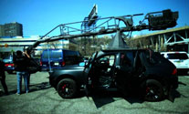
Manhattan Place Entertainment (MPE) utilized the Action Camera Car system to shoot a live action "simulation" of the road course that will be driven by the worlds greatest race cars drivers in next years Formula 1 Grand Prix. The race will take place along the banks of the Hudson River in the towns of Weehawken and West New York, NJ in the spring of 2013.
The promotional piece featured intense shots of the actual race course as well as breathtaking scenes of the New York skyline and Hudson River from the vantage point of the road course.
The Action Car System is built on a Porsche Cayenne chassis and features a remote controlled crane that moves up down and swings 360 degrees around the vehicle... while the vehicle moves at high rates of speed!
Amazingly the vehicle can easily run at 70 miles an hour and perfectly stabilize any camera shot at top speed. It is ideal for shooting action sequences that require tracking other vehicles moving at high speed.
"It's a pretty wild rig" said Steve Cohen who was the director on this project, "there are five people jammed inside a Porsche Cayenne all specializing in their one area. In the front row there is the driver who is an expert in high speed chase driving. Next to him is the boom operator who controls the movement of the crane. In the back row there is the operator working the remote controls for the camera (tilt, pan and framing) and myself watching the monitor, and finally our camera assistant who is tucked away in the back hatch handling remote zoom and focus".
"All of us simultaneously had to coordinate our individual efforts and work as a cohesive unit in order to successfully capture stellar imagery... while going at 70 miles an hour through the streets of Weehawken! The sum had to be greater than the individual parts in order for this to work, and in this case it was".
As always, MPE is 'driven' to use the state of the art technology to help enhance the level of production quality and production value that we deliver.
Back to Top
May 25 2012
As part of its continuing collaboration with Cablevision and The Lustgarten Foundation, Manhattan Place Entertainment produced a public service announcement for the curePC campaign to raise awareness of pancreatic cancer.
The new spot, featuring actor/comedian Denis Leary, was directed by Steve Cohen.
The spot was shot on the ARRI Alexa digital camera."Choosing the Alexa was a no brainer" said Cohen, "we wanted the most cinematic look available in a digital format and in my opinion there is no camera that does that better right now than the Alexa."
In this compelling spot, Leary talks about losing a friend to pancreatic cancer, and urges viewers to join the fight against the deadly disease by visiting curePC.org. You can also view the PSA on our website.
Cablevision's support of The Lustgarten Foundation ensures that 100 percent of every dollar donated to the Foundation goes directly to pancreatic cancer research.
Back to Top
May 17 2012
With the Knicks and Rangers both involved in the 2012 playoffs, MSG Network turned once again to its long-time partner, Manhattan Place Entertainment (MPE), to help create the look and tone of its playoff coverage.
MPE shot stylized elements with players from both teams that were used for a series of vignettes that ran on MSG during the postseason.
The spots included close-up interviews with players talking about the passion, intensity, and tradition of the playoffs, and what it meant to them to be competing for the ultimate prize in their sport.
The vignettes conveyed the message: "The playoffs on MSG. Its Different Here". MPE's spots ran throughout the playoffs, on MSG.
Back to Top
May 16 2012
Manhattan Place Entertainment turns its focus to fashion, collaborating with GLAM.com to produce a series of web videos for the Kohl's Rock and Republic line of apparel.
The episodes showcase six bloggers getting a full makeover with clothing from the Rock and Republic Line.
The make-over participants each describe their favorite pieces and explain how the items reflect their personal style.
Just like the clothing line, the videos have their own distinct look: stylized shooting with fast-paced editing to upbeat music, reflecting the excitement of the launch of Rock and Republic at Kohl's.
Back to Top
May 3 2012
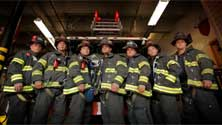
Manhattan Place Entertainment adds to its list of top industry honors with two 2012 Telly awards in the category of Sports Cinematography.
One was for a project marking the 10 year anniversary of 9/11, a poignant piece shot for FOX NFL Sunday.
Shot and directed by Steve Cohen and Alan Jacobsen, the feature illustrated how football played a part in the healing process in the days and weeks after the terrorist attacks.
The second Telly award was for 2011/2012 The New York Rangers lights out introduction.
The introduction is played before every home game on the big screens inside the arena at MSG.
Utilizing Manhattan Place's signature style of sports cinematography, a montage of original player images was incorporated with game action, New York City scenics, and dramatic music to create an electrifying pre-game intro for the fans to enjoy.
MPE is proud to once again be recognized among the best in the business!
Back to Top
June 8 2011
Manhattan Place Entertainment is called upon for another high-profile project, this one involving one of the biggest superstars in the world of music: Beyonce.
The production company Pretty Bird turned to MPE's Steve Cohen to be one of the Directors of Photography on its commercials starring the multi-Grammy award winning singer.
The spots feature sitdown interviews with Beyonce, to promote her association with Target retail stores.
In one of the spots, Beyonce talks about what makes Target such an appealing place to shop.
The other spot focuses on the deluxe edition of her latest album '4', released exclusively by Target and featuring three new songs, along with three remixes.
Back to Top
April 26 2012
Manhattan Place Entertainment in collaboration with GLAM.com has created a series of new webisodes showcasing Kohl's hottest Spring Trends.
The six videos showcase fashion bloggers undergoing "wardrobe" makeovers, using clothing from the Kohl's line to show off their favorite Spring styles.
The bloggers describe how the clothes reflect their individual styles, and discuss some of the new trends, including color blocking and animal prints.
Spring is in the air in MPE's makeover videos, viewable on our website or on Kohl's Youtube channel: here.
Back to Top
April 19 2012
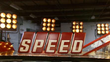
Manhattan place entertainment (MPE) recently got "Back on Track" with SPEED to execute a major production shoot this time involving the NASCAR Craftsmen Truck Series.
Working on location in Mooresville, NC, MPE handled all aspects of the field production.
Through careful planning and proper execution, we were able to successfully acquire a wide variety of visual elements, that in-turn, will be implemented in a multitude of ways into SPEED's season long coverage of the NASCAR Craftsmen Truck Series.
"The first step for us was designing and building a set that created an edgy and moody environment for the Truck Series drivers to appear in . Once that was achieved, it was like "shooting fish in a barrel" said Steve Cohen. "All that was left after that was for the drivers to come in and follow our lead so we could get cool shots of them on the set" The set acted as the focal point for the two days of shooting with the 34 different drivers, but also served as the main environment for photographing various specialty shots including racing props, signage, and other SPEED branded elements for the NASCAR Craftsmen Truck Series.
Steve Cohen Executive Produced for MPE and acted as Director and Director of Photography on-site, leading a team of talented production designers, producers, camera and lighting technicians and other production support teams.
Back to Top
April 13 2012
Manhattan Place Entertainment, collaborating with Glam.com, hit the runways during New York's Fashion Week to produce a video celebrating the launch of of Rock & Republic, a new line available exclusively at Kohl's.
The edgy, fast paced video captures the show's flair and excitement and features backstage footage of the models getting ready, interviews about their love of Rock and Republic, and of course, a peek inside the star studded fashion show as the models strut their stuff and in the words of Kohl's, "Rock The Look".
You can see all the style, both ours and theirs, when you check out the video on our website or on Kohl's Youtube channel: here.
Back to Top
April 5 2012

As the New York Rangers head for the playoffs and the chase for the Stanley Cup, Manhattan Place Entertainment is helping to heat things up on the ice at Madison Square Garden.
Manhattan Place teamed up with the Rangers on the open that is being played on the Madison Square Garden video screen before every home game at MSG.
Using Manhattan Place's signature style of sports cinematography, a montage of original player images was incorporated with game action, New York City scenics, and dramatic music to create an electrifying pre-game intro.
Back to Top
March 29 2012
Manhattan Place Entertainment is on the road again, going coast to coast for a new campaign for Keurig coffee makers.
Acquirgy, a leading direct response marketing agency, along with Heads-Up Creative, turned to MPE to provide comprehensive production services on the location shoots that took place in New York and Chicago for an infomercial promoting the new Keurig Vue Brewer.
It features Jennie Garth, best-known as one of the stars of the TV series 'Beverly Hills 90210'.
In the infomercial, Jennie takes viewers on the 'Keurig Vue Brewer Journey Across America'. She travels around the country, spreading the word about the new Keurig that personalizes the brewing process to bring people stronger, bigger, and hotter cups of coffee just the way they like it.
The journey, shot over a seven-day period in November, winds up at Jennie's home in the wine country of Southern California, where she introduces the new brewer to her friends.
Back to Top
March 22 2012

Manhattan Place Entertainment partnered with the New York Stem Cell Foundation, to produce a video highlighting the foundation's groundbreaking work.
The video outlined the mission of NYSCF in accelerating cures for the major diseases of our time through stem cell research. It featured scientists who are at the forefront of this research and some of their exciting breakthroughs.
In producing this video, MPE interviewed the most prominent leaders and supporters of the foundation, shot extensive footage of stem cell research in the lab, and consulted closely with NYSCF on all aspects of the editorial content.
The video, titled "A Bridge To Cures" premiered at NYSCF's Sixth Annual Gala Dinner Celebration in October 2011.
To view this video click on the photo above or go to NYSCF's website at www.nyscf.org
March 15 2012
Manhattan Place Entertainment is helping to get fans fired up for each game of New York Knicks basketball this season.
MPE teamed up with the Knicks on the open that is being played on the Madison Square Garden video screen before the Knicks take the court for their games at MSG.
Using MPE's signature style of shooting, lighting, and pacing, a montage of original player images was incorporated with New York City scenics and game action to create an electrifying pre-game intro.
We're proud to help MSG and the Knicks keep the Garden rocking this season!
Back to Top
March 8 2012
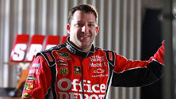
Manhattan Place Entertainment was in high gear with its recent production work for SPEED Channel.
Over a period of 2 weeks, MPE took its cameras and crews all over Daytona Beach, acquiring various branded elements for SPEED's on-air look, culminating in a marathon day of shooting with 36 different drivers from the Sprint Cup Series prior to the Daytona 500.
SPEED utilized MPE's vast production capabilities and commissioned MPE to design and build four individual racing related sets where distinctive images of each of the drivers could then be captured.
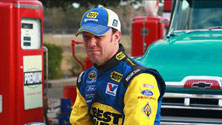
A rotation system was put into place so that each driver could be photographed in each of the (4) environments in a "timely" manner. MPE was given the challenge of having a total of (5) minutes with all of the drivers at each set. That's video productions version of a "pit-stop", but once again, MPE raced across the finish line with flying colors (this is our 12th year shooting NASCAR related imagery).
Steve Cohen executive produced for MPE and acted as director and directory of photography on-site, leading a team of talented production designers, set builders, producers, camera and lighting technicians and other production support teams.
Between the branded elements, and driver portraits, the original footage shot by MPE will be used in a multitude of ways during SPEED's year-long NASCAR coverage, beginning with the Daytona 500.
Back to Top
February 24 2012

For a series of vignettes to celebrate Black History Month, MSG Network turned to its long-time partner Manhattan Place Entertainment to handle production, lighting and cinematography.
The spots, titled "Voices of Harlem", featured young African-American poets from Urban Word NYC, a youth development and education program, performing their original poems.
Directed by Steve Cohen, MPE shot them reading their poems, with scenes of Harlem and famous New York City African-Americans projected on a screen in back of them.
These unique vignettes aired on MSG and MSG+ throughout the month of February, as part of the network's special Black History Month programming. They can also be seen on MSG.com
Back to Top
January 20 2012

Manhattan Place Entertainment caught up with one of the hottest recording artists in music, rapper Cee Lo Green, for a special in-depth interview for DIRECTV.
In an elaborate multi-camera shoot for HD and 3D MPE sat down with Cee Lo before his small private concert at the Gansevoort Hotel in New York City.
The interview came at the height of his popularity, as Cee Lo's song 'Forget You' was one of the top-selling singles of 2011.
The concert for which MPE shot the interview aired New Year's Eve exclusively on DIRECTV's Audience Network, as part of DIRECTV's 'Old School Challenge'.
Back to Top
January 6 2012

Manhattan Place Entertainment collaborated with The Creative Group on a series of web spots for Oral B® electric toothbrushes.
Starring in the spots is Sherri Sheppard, the Emmy-award winning co-host of the daytime talk show, 'The View'.
With Steve Cohen as Director of Photography, the lighthearted videos feature Sherri in her 'Powerful Moments of Truth'… the instant when she makes the switch from a manual to a power toothbrush, and realizes the positive impact it will have on her teeth.
The spots are meant to not only entertain viewers, but encourage them to use power toothbrushes to improve their oral health.
To see Sherri and MPE's Powerful Moments of Truth, or in this case, Moments of 'Tooth', click on the link below.
Back to Top
2011
November 23 2011
Manhattan Place Entertainment wanted to take this opportunity to wish all of our friends a very happy Thanksgiving.
With the holiday season upon us, itʼs also that "special time" for many of you where end of year projects need to get produced and delivered, and budgets for the next fiscal year are being planned.
That's where we come in.
If you are looking for a highly skilled company to help facilitate and deliver any type of video/film production project, across any platform, from Broadcast to Digital and the Web, you should strongly consider us.
Our successful action is in our ability to elevate any project and over deliver on expectations, while removing the daily stress and problems that our clients would normally have to be faced with.
We may sound like "that guy" on the clothing commercial, but we think "Youʼre gonna like the way [we make] you look", and thatʼs the key to an effective strategic alliance.
From creative through to delivery we always provide the highest level of production quality and expertise ... without providing the high price tags.
We look forward to collaborating with you.
Gobble Gobble...

Happy Thanksgiving,
From all of us at Manhattan Place Entertainment.
Back to Top
November 18 2011

Manhattan Place Entertainment is off to the races with a new project for
the Speed Channel.
Recently MPE was in Miami and teamed up with Speed Producer, Gary Lang, to shoot a series of promotional branding elements, as part of the channel's coverage of NASCAR's 2011 Championship Week.
With Chris Bierlein as the Director of Photography, we took our cameras on location to Miami Beach and Homestead-Miami Speedway.
The specialty shots will be shown in various forms, including promos and elements for Speed's shows such as Speed Center, Trackside Live, Race Day and Victory Lane.
Look for MPE's signature work all year long on the Speed Channel.
Back to Top
November 17 2011
Manhattan Place Entertainment heads down memory lane with the Sundance Channel on its popular new show, "The Mortified Sessions".
In association with Long Pond Media, and with Steve Cohen as Director of Photography, MPE shot an episode of the unusual interview series.
It features celebrities delving into personal mementoes from their past and sharing some of the experiences of their youth that shaped them into the people they are today.
This particular episode features actor and filmmaker Ed Burns opening up about his childhood memories and the influence of his father, a New York City police officer who had his kids 'doing time' to keep them out of trouble.
The show shot by MPE can be seen as part of 'The Mortified Sessions', airing Friday nights at 7pm on the Sundance Channel.
Back to Top
November 11 2011
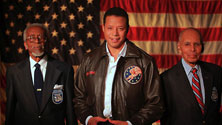
In recognition of Veteran's Day, Manhattan Place Entertainment collaborated with Fox Sports in a salute to a group of American heroes.
MPE shot a special tease that features two members of the famed Tuskegee Airmen, the first unit of African-American fighter pilots, who fought in World War II.
The tease also includes Oscar-winning actor Terrence Howard, who will be starring in an upcoming film about the Airmen, "Red Tails".
The Tuskegee Airmen are being honored on the 70th anniversary of their service with a tribute during three NFL games this Sunday, November 13th.
Look for MPE's Veteran's Day tease honoring these heroic pioneers on Fox NFL Sunday.
Back to Top
November 4 2011
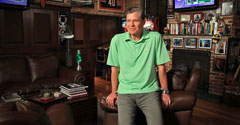
Manhattan Place Entertainment went behind the scenes with one of the country's most prominent sports broadcasters, Dan Patrick.
MPE collaborated with DIRECTV to shoot a series of 4 promos for the 'The Dan Patrick Show', the TV version of his popular radio show.
The promo will spotlight the nationally syndicated program, which features sports talk, interviews, and Dan's unique brand of wit.
It airs on The Audience Network, DIRECTV's original programming channel.
Back to Top
October 28 2011
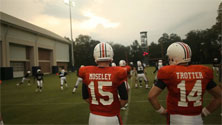
MPE Tackles ESPN Football Documentary For DLP Entertainment
The Depth Chart
Manhattan Place Entertainment recently took the field for its latest sports project: a documentary on college football produced by DLP Entertainment for ESPN.
MPE was recruited by DLP Entertainment to provide the crews, equipment, and Directors of Photography for the production.
DLP's executive producer Mike Hughes wanted a certain stylized visual look for the show, and knew he could turn to MPE to create it.
For this particular project, we hit the road to follow teams and players in four different collegiate programs including: Auburn, University of Wisconsin, Oklahoma State University, and University of Arkansas, providing exceptional production services for each location.
The documentary will air over a stretch of five weeks, providing viewers with a revealing look inside the world of college football.
Look for our work on ESPN this fall.
Back to Top
October 12 2011

With the NFL season underway, Manhattan Place Entertainment helped MSG Network kick off its coverage of New York Giants football.
The lighthearted spots featured play-by-play man Bob Papa taking the field at MetLife Stadium, and former Giants linebacker-turned-radio analyst Carl Banks studying intently for an upcoming broadcast.
Acting as Director of Photography, MPE's Steve Cohen was on location at the Giants complex shooting the two MSG promos.
The promos will air throughout the season on MSG Network.
See the 'MPE Takes "Giant" Steps' spot »
Back to Top
September 21 2011
To mark the 10th anniversary of 9/11, Manhattan Place Entertainment partnered with Fox Sports to create a poignant piece for FOX NFL Sunday.
MPE shot a feature that illustrates how football played a part in the healing process, in the days and weeks after the terrorist attacks.
The piece features scenes from the rebuilding at Ground Zero, along with emotional interviews with members of the New York City Police and Fire Departments, as well as the Port Authority Police.
Recalling how the NFL was the first sport to return after 9/11, they reflect on how football served as a much-needed distraction, after the tragic events they had witnessed and the losses they suffered.
Shot and directed by MPE's Steve Cohen, the feature will air as part of FOX's special pre-game tribute on September 11th, the first Sunday of the 2011 NFL season.
See the 'Commemorating 9/11' spot »
Back to Top
September 21 2011
One of the world's leading providers of high-quality children's programming, HIT Entertainment, selected MPE to produce two instructional videos for HIT's most recent Thomas & Friends™ apps, compatible for iPad®, iPhone® and iPod Touch®. The videos are now available for the story-inspired apps, Thomas & Friends™: Misty Island Rescue and Thomas & Friends™: Hero of the Rails.
With its latest project, MPE helps little engineers fully experience all of the adventure on the rails offered by these innovative, interactive apps. The videos help guide users on how to read, watch, and play with the many features of the apps, including multi-touch animation, CGI video, painting, puzzles, and games.
MPE is thrilled to help Thomas fans move full steam ahead and we hope you enjoy the exciting new apps.
See the 'All Aboard With Thomas & Friends™' spot »
See our other 'Thomas & Friends™' spot »
Back to Top

Manhattan Place Entertainment was on board with one of the most intriguing new shows of the fall TV season, 'Pan Am'.
The ABC show, set in the 1960's, follows the lives of stewardesses who flew with Pan American Airways.
As part of the promotional effort for the series, MPE took its cameras to the set at Steiner Studios in Brooklyn.
We interviewed real life Pan Am stewardesses, to gain some insight into what it was like in those earlier days of air travel.
'Pan Am', starring Christina Ricci, premieres Sunday Sept. 25th at 10p.m. on ABC, and MPE is glad to be along for the ride.
Back to Top
July 27 2011

Manhattan Place Entertainment is proud to be associated with a new series that brings baseball history to life for fans across the country. "The Boys in the Hall", a weekly half-hour series, has been airing on Fox Sports Net. Hosted by former NBC News anchor Tom Brokaw, the 13 episode series features revealing interviews conducted by former baseball commissioner Fay Vincent with some of the greatest players of all-time. MPE provided production services including art direction, design and construction of all the studio sets, with Steve Cohen serving as the Director of Photography. In this project, MPE collaborated with Flagstaff Productions, the producers of well known sports documentary shows for HBO including "When it was a Game", "Mantle", and "Babe Ruth". Check your local listings for "Boys in the Hall" on Fox Sports Net.
See the 'Boys in the Hall' spot »
Back to Top
June 29 2011
And the winner is: Manhattan Place Entertainment. MPE is proud to announce that our work was recently recognized with two 2011 Telly Awards. The awards honor the best local, regional and cable television commercials, as well as the finest video and film productions.
Taking home a Telly Award in the category of Best Sports TV Segment and Promotional Piece was our spot featuring Dan Lauria, who starred as legendary Green Bay Packers coach Vince Lombardi in the Broadway show 'Lombardi'. The piece aired in the pregame show for Fox Sports leading into its coverage of this year's Super Bowl. In his acclaimed portrayal of Lombardi, Lauria delivers a powerful pre-game speech, exhorting his beloved Packers to play their best in the 2011 Super Bowl against Pittsburgh. Steve Cohen shot and directed the spot, filmed in the theatre where the show was staged, New York's Circle in the Square.
MPE's other Telly came in the category of Best Regional TV & Multi Market Cable Sports Commercial. The award is for a commercial promoting Versus's coverage of the Texas Indy 550. The spot, titled 'Eyes Wide Shut', was produced as part of MPE's partnership with Versus for its 2010 coverage of the Indy Racing League. MPE shot all of the world's most well known Indy Car drivers and created specialized elements for use in Versus show teases, driver profiles, and on-air promotional spots. MPE was responsible for handling the directing, cinematography, lighting, art direction, set construction, and all other technical aspects of the shoots, and contributed to the creative as well.
Scoring a touchdown for Fox Sports and taking the checkered flag for Versus, Manhattan Place Entertainment continues to provide award-winning content for our clients across all forms of media.
Back to Top
June 28 2011

Manhattan Place Entertainment was on the case of the legal drama, 'Damages', on DirecTV.
MPE was called upon recently to shoot a promo for the Emmy Award-winning original series.
With Steve Cohen as the Director of Photography, we went behind the scenes with the talented cast on their set at Steiner Studios in Brooklyn.
The show, starring Glenn Close and John Goodman, is seen on the DirecTV channel 'Audience Network' and has won numerous awards, including a Golden Globe and several Emmys.
MPE's gripping promo was used for season four of the show, which premiered in July.
Back to Top
May 12 2011
Manhattan Place Entertainment recently shot, produced and executed a campaign of TV commercials demonstrating the innovative cancer care approach of St. Vincent's Medical Center in Bridgeport, Connecticut.
MPE, the Emmy, Promax, Cine Eagle and Telly Award winning production house, completed a series of three spots, from providing the creative concepts to overseeing every aspect of production.
Two of the spots feature cancer survivors telling their poignant stories of the life-saving treatment and compassionate care they received at St. Vincent's.
The other spot showcases the state of the art Novalis radiation device that has given the hospital a powerful new tool for treating tumors.
MPE handled the interviews with the patients, shooting treatment facilities at St. Vincent's, research and scriptwriting to convey the hospital's cancer care approach, and all phases of production from creative through to delivery of the final spots.
The three commercials are currently airing as regional spots in the New York metropolitan area. MPE is proud to have teamed up with St. Vincent's, in its efforts to bring high quality cancer care to area patients.
Back to Top
February 7 2011
MPE, the Emmy, Promax, Cine Eagle and Telly Award winning production house, shot and directed Oscar winning actor Michael Douglas narrating a retrospective piece entitled, ”The Journey”. The inspiring feature aired just prior to the kick off of Super bowl XLV and was literally seen by an audience numbering in the 10 millions.
This marks the 8th time that MPE has created content for the Super Bowl, America’s most highly viewed televised event.
Back to Top
February 7 2011
Dan Lauria, the star of Broadway’s hit play “Lombardi” performed a compelling Super Bowl pre-game speech that addressed the reigning NFC champion Green Bay Packers, imploring them to play their best in the Super Bowl.
MPE’s Steve Cohen shot and directed both features that aired during the FOX Sports coverage of Super Bowl XLV.
Back to Top
2010
May 25 2010
With the 46th running of the Indianapolis 500 upon us, MPE is proud to have "qualified" in playing a key role in the creation of a fresh new look for Versus and their 2010 IZOD Indy Car Series telecasts.
Danica Patrick IZOD Indy Car Series Driver
MPE shot all of the worlds most well known Indy Car drivers and created stylized live action portraits as well as other specialty visual elements.
The original footage is used by the Versus team for creating show teases, driver profiles, and on-air promotional spots.
MPE was responsible for handling the directing, cinematography, lighting, art direction, set construction, and all other technical aspects of the shoots, and contributed
to the creative as well.
The footage can be seen on Versus coverage of the Indianapolis 500 and throughout the entire 2010 IZOD Indy Car Series season on Versus.
Back to Top
April 30 2010

Michael J Fox Foundation PSA
Manhattan Place Entertainment is the proud recipient of 10 more Telly Awards. These latest Telly's were received for projects that were produced in the second half of 2009.
Tellys were awarded for the "Michael J. Fox Foundation" PSA in the categories of Public Service announcement, Videography/Cinematography and Lighting. "United We Play" produced for the New York Liberty also earned 3 awards for Videography/Cinematography, Editing, and Copywriting. The third award winning spot was the Lustgarten Foundation Public Service announcement for pancreatic cancer featuring well known Actor Bryan Cranston ("Breaking Bad"). This was recognized for best Public Service announcement, Lighting, and Set Design. Completing the list of winners was "Baby by Me," featuring rap Superstar "50 Cent" which won for best Videography/Cinematography. All told MPE received a whopping 14 Telly Awards for 2009.
Back to Top
March 11 2010
Manhattan Place Entertainment was recognized with 3 Cine Eagle "Golden Eagle" Awards. Two were for the New York Knicks Marketing Campaign and the other was for the The New York Rangers marketing campaign.
The Golden Eagle is the highest honor bestowed by the Cine Eagle Awards.
The first award was for the Nate Robinson "Working For It" commercial and the second award was in the category of "Program Open" for the New York Knicks "In-Arena Open". The third award MPE received was for Cinematography on the "I am a Ranger" spot that we shot last spring. That combined with 4 Telly Awards made 2009 a banner year for MPE.
Back to Top
February 1 2010
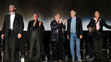
Manhattan Place Entertainment working in connection with IFC (The Independent Film Channel) handled the live mutli-camera video production, IMAG projection, and simultaneous web streaming of The Monty Python Reunion held at the Ziegfeld Theater in NYC.
This historic event reunited all five surviving members of the Monty Python team -- John Cleese, Terry Gilliam, Eric Idle, Terry Jones, and Michael Palin -- as they were on hand to receive a lifetime achievement award from BAFTA.
Prior to receiving the award, the troupe entertained the packed house with a spontaneous 30 minute Q&A.
Pictured left to right: Michael Palin, Terry Jones, Terry Gilliam, John Cleese, and Eric Idle.
Back to Top
January 11 2010
Manhattan Place Entertainment recently produced and shot "Baby By Me" a :60 second TV spot for Vitamin Water starring hip-hop superstar 50 Cent.
The spot was part of a campaign to promote the release of the artists new album, "Before I Self Destruct".
Steve Cohen of Manhattan Place Entertainment produced and directed.
Back to Top